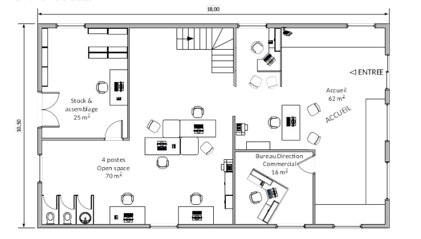
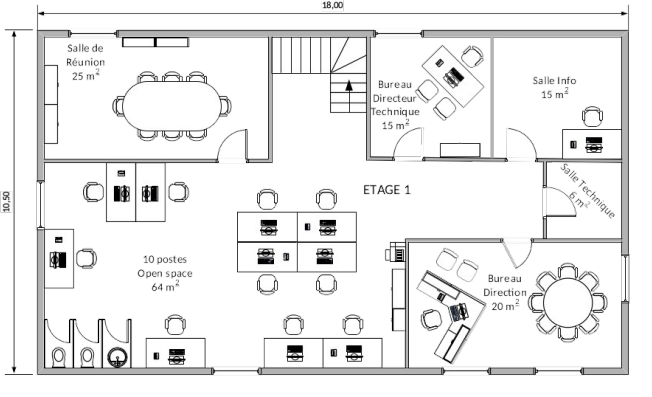

Dans cette SAE, l'objectif était de concevoir et déployer le réseau LAN complet d'une entreprise fictive en utilisant le simulateur Eve-NG. Ce projet simule les conditions réelles d'un technicien réseau débutant dans une entreprise : analyser le cahier des charges, choisir l'adressage IP, configurer les équipements et valider la connectivité.
Concevoir un plan d'adressage IP cohérent
Configurer des switches et routeurs Cisco
Mettre en place la segmentation par VLAN
Valider la connectivité end-to-end
Documenter la topologie et les configurations
Sujet de la SAE
Plans du Rez-de-Chaussée et première étage


Ce que j'ai réalisé
Analyse du cahier des charges réseau de l'entreprise
Création de la topologie réseau sur Eve-NG
Configuration des switches (VLANs, trunk, access ports)
Configuration du routeur (routage inter-VLAN, NAT)
Mise en place d'un serveur DHCP pour l'attribution automatique d'adresses IP
Tests de connectivité (ping, traceroute) entre les différents segments
Rédaction d'un rapport de documentation réseau
Compétences acquises
AC11.03 — Configuration réseau localAC11.05 — Identifier les dysfonctionnementsAC11.02 — Architecture des systèmesAC11.06 — Installation poste client